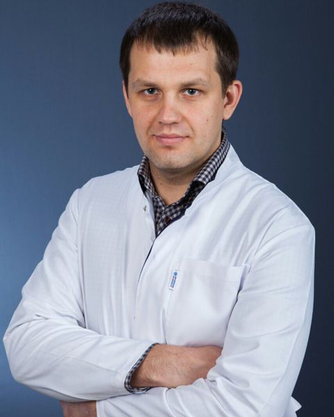

Черевцов В. Н. · фотопредложил сам врач · 19.11.2026, 08:52 · уйдёт на ИХС, FD, RFждёт ПолеСейчас на сайтахПредлагается Фотоновое фоточ/б, 1200×1600 (пример) ✓ ПринятьВернуть с причиной Причина — её увидит врачВернуть
Черевцов В. Н. · регалиипредложил сам врач · 19.11.2026, 08:52ждёт ПолеСейчас на сайтахПредлагается Регалии и должностьТравматолог-ортопед. Ментор курсов Института хирургии стопы.Травматолог-ортопед, врач высшей категории. Ментор курсов Института хирургии стопы. ✓ ПринятьВернуть с причиной Причина — её увидит врачВернуть
ОКНовая клиника · от ассистента Ольги К. (врачи: Черевцов В. Н.)18.11.2026, 17:40 · в общий справочник экосистемыждёт ПолеПохожие в справочникеПредлагается НазваниеОртопедический салон «Сурсил-орто», Москва, Ленинский пр. (пример) — возможно, дубльСалон «Сурсил-орто» на Ленинском АдресМосква, Ленинский пр., д. 0 (пример)Москва, Ленинский пр., д. 0, 1 этаж (пример) ✓ Добавить в справочникЭто дубль — привязать к существующейВернуть с причиной Причина — её увидит ассистентВернуть